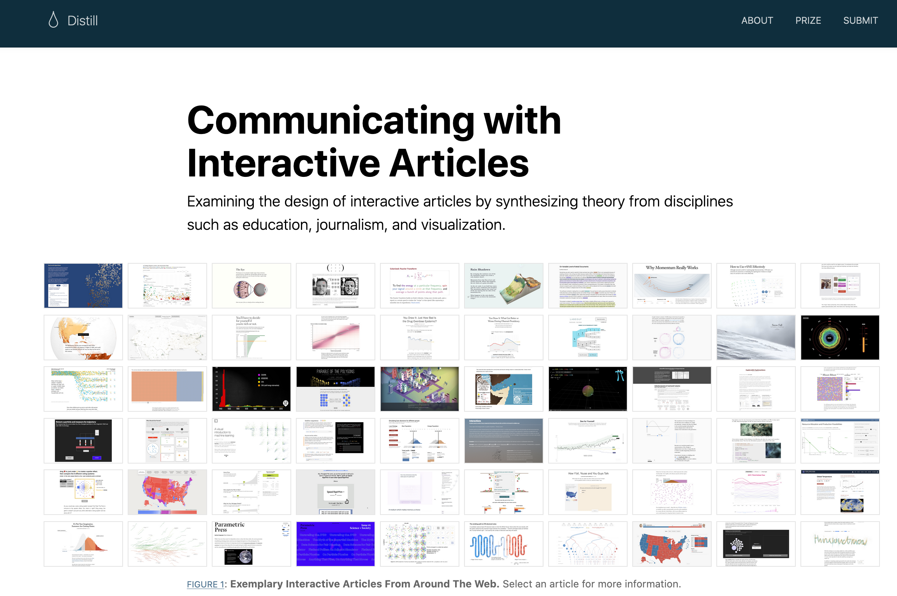

What is Distill?
Distill is a package built for R Markdown, an ecosystem of packages for creating computational documents in R. The goal of the Distill package is to provide an output format optimized for online scientific and technical communication. The Distill R package provides two HTML output formats for R Markdown documents:
Single HTML articles (
distill_article), andMulti-page HTML websites, including blogs (
distill_website).
These formats are based on the Distill web framework used by the Distill Machine Learning Journal (Olah et al. 2018). The Distill web framework was originally developed to catalyze more engaging and effective scientific, technical communication. The idea was to create a platform to help scientists harness the benefits of modern HTML-based communication, which digital designers and journalists have been using to create interactive and engaging articles that meet readers where they are: online.

Figure 2: A Distill publication
If you are keen to learn more about how visual aesthetics and interactivity can improve readers’ engagement and learning, we recommend reading Hohman et al. (2020).
Distill for single HTML articles
If you have ever knit an R Markdown file to html_document(), then you can think of distill_article() as its scientific alter-ego.

Figure 3: PBS Full-Time Kid Egg in a Bottle Experiment
Distill articles offer users an R Markdown format with built-in bells and whistles that make scientific communication easier, including:
Ability to incorporate JavaScript and D3-based interactive visualizations made with R.
Support for citations, appendices, hover-able footnotes, and asides.
Tools for making articles easily citeable, as well as for generating Google Scholar compatible citation metadata.
Auto-numbering of figures and tables, and cross-referencing of figures and tables.
Built-in support for multiple authors with affiliations and ORCID iD.
Adding creative commons licensed content with specific reuse instructions.
Each of these features are designed to help scientists use the web and R to communicate about their work more effectively. But you can also use Distill to publish any HTML content, like instructions for making bagels- Distill works great for that too.1
Distill for websites and blogs
While a single article may often be all that you need, many data science projects involve a collection of multiple R Markdown documents. When you have more than one R Markdown file knitted to HTML in your collection, it’s a good time to think about knitting them together into a single, navigable website. It is much easier for folks to engage with your work when you can share a link directly to it that they can see and explore it themselves.

Figure 4: PBS Full Time Kid DIY Bird Feeder
Distill can knit together a collection of distill articles into a cohesive and navigable website. Distill sites feature an upper navigation bar with links (which may also include dropdown menus). In addition, Distill blogs offer page layout options like listing pages and the ability to customize them. A listing page doesn’t have to be populated manually; instead, it creates a clickable, sequential list of all your posts (usually with nice thumbnail images and some post metadata like author, date, etc.). Blog posts also get special treatment by Distill — they are never automatically re-rendered when your site is re-built.
Here is a Distill blog in action, from the RStudio AI blog:

Figure 5: The RStudio AI blog, built with distill
Distill adds several built-in features to make websites better-suited for scientific communication:
Per-article sharing preview images (for OpenGraph, Twitter, Slack, etc.).
Canonical urls - handy for when your own post is re-published elsewhere.
Customizable RSS feeds (either with summaries or full post content).
Site logo in the upper navbar.
Integrated Google Analytics support.
These are all on top of the features we listed for individual Distill articles. You can also use RStudio’s visual markdown editor2 to compose Distill articles, which provides a WYSIWYG (What You See Is What You Get) writing experience as well as the ability to insert citations from a document bibliography, reference management software, and even open-source bibliographic databases like PubMed.
Importantly, Distill websites are built without any kind of static site generator (like Jekyll or Hugo), which means that Distill websites offer users the bliss of building a website without any additional software dependencies (this means, all you need is R and the distill package to make it work).